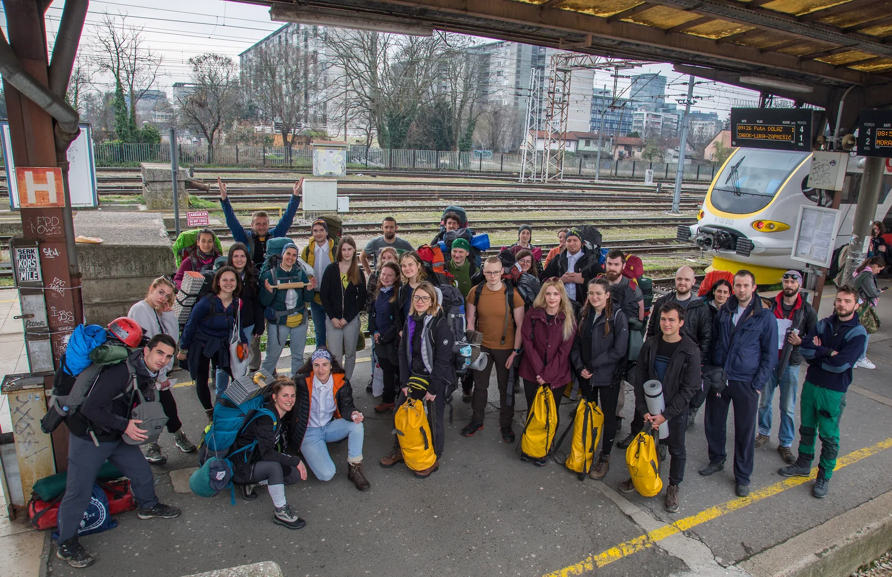

Osvrt na prvi izlet 54. škole
Iza nas je prvi izlet u Tounj (kojem su se veselili više instruktori, nego mi školarci), posjet Špilji u kamenolomu Tounj, prve vježbe sa zamkama i čvorovima, na užetima te HŽ saga.

Napisao: Lovro Vragolović
Fotografije: Paula Skelin, Maja Drobac, Dragana Rajković, Marjan Prpić
Započela je još jedna, 54. po redu Zagrebačka speleološka škola. Iza nas je prvi izlet u Tounj (kojem su se veselili više instruktori, nego mi školarci), posjet Špilji u kamenolomu Tounj, prve vježbe sa zamkama i čvorovima, na užetima te HŽ saga. Okupili smo se svi, dana 16. ožujka u subotu ispred Glavnog kolodvora u Zagrebu. Natrpani svom opremom za dva dana, osobnim ruksacima i transportkama. A neki su i ovo zadnje odlučili zaboraviti i spojiti sve u jedno.
Opalili smo jednu zajedničku fotku i avantura je mogla početi.
Naravno da nije moglo krenuti bez „problema“. Već iza druge stanice morali smo presjesti, sa svim tim stvarima, na autobus koji nas je vozio do Zdenčine u koju smo se ponovno ukrcali na vlak. Neposredno prije izlaska započele su prve edukacije o vezivanju čvorova koje će nas pratiti do samoga kraja (za nekoga škole, a poneke sigurno i života). Probijanjem kroz „džunglu“ do mjesta odredišta započele su sve čari koje nosi kampiranje i život u divljini. Nije bilo lako, ali je bilo uspješno.
Goga nam je s lopaticom u ruci održala najbitnije predavanje kako u školi tako i u životu, a to je – sranje. Jer stvarno, kada 50 ljudi obitava na jednom prostoru dva dana, treba biti oprezan i misliti na sve, a pogotovo na potencijalno „minsko polje“. Postavili smo bivke u kojima ćemo provesti noć te potom rasprostrli švedski* stol svega što smo donijeli i oko čega ćemo se okupljati i gostiti narednih nekoliko puta. Bilo je svega, od žitarica s raznim povrćem, voća, narezanih sireva i suhomesnatih proizvoda, kolača… Bilo je stani pa gledaj, a onda i uzimaj.
Opremili smo se, stavili kacige i naglavne lampe na glave, čizme na noge i krenuli prema našoj prvoj špilji – Špilji u kamenolomu Tounj. Dok smo se približavali, morali smo se susresti sa „suparnicima“ iz druge škole i društva, od milja zvanim SKOLOVCIMA, koji su taman izlazili i oslobodili nam sve puteve za kročenje u nju. Fero nam je, s plamenom na kacigi, ali doslovno, prije samog ulaska u špilju pričao o korištenju rasvjete u špiljskim i jamskim objektima od prošlosti do danas. Na glavi je naime imao karabitku, karabidno-acetilensku svjetiljku u kojoj se nalazio kalcijev karbid koji u dodiru s vodom iz spremnika stvara zapaljivi plin acetilen, koji pak preko gumene cijevi spojene na kacigu gori plamenom. Zanimljivo je da smo se nakon nekoliko prijeđenih stotina metara uspjeli zagubiti. Neki su se možda i uplašili, a neki ne: „Barem ćemo svi skupa strunuti...“ Trebalo je pronaći „Sisu“ kao orijentir, i zaista smo je pronašli, ali trebalo je proći još dosta hodnika, penjanja i provlačenja. Možda najljepši trenutak za većinu bio je kada smo svi skupa, okupljeni u jednoj od dvorana, zastali, ugasili sva svjetla, utihnuli te jednostavno bivali, disali i slušali škljocanje vode. Jedino je bila šteta što je prekratko trajalo. Jednako tako veličanstven trenutak bio je zasigurno vidjeti i prizore ovješenih šišmiša koji su još uvijek bili u stanju hibernacije. Ne bi vjerovali (speleolozi vjerojatno i bi), ali došavši u najveću dvoranu s jezerom prema kraju, tzv. Mamutovu dvoranu i Mamutovo jezero, koje je spojeno s jezerom u drugoj špilji Tounjčici (pokraj koje smo samo prošli) -neki su se i okupali. No, da Olga nije prva zašla u vodu i probila led, možda ne bi niti tko drugi…
Dan smo završili okupljeni oko vatre. Svirala se i gitara, mazilo i lajalo s psima te tjeralo u glavi otići ranije se naspavat kako bi bili odmorniji i koncentriraniji za vježbe koje sutrašnji dan donosi.
Nedjelju su obilježile vježbe na užadi (prusiciranje, Francuz, Dűlfer, polulađarac…) na nekoliko postaja koje je valjalo sve proći. Prije toga obavili smo kraće zagrijavanje s igrama s Čedom te vježbanje uzlova, što sidrišnih (osmica, dvostruka osmica, devetka, bulin, lađarac…) što za spajanje užeta (križni), a došli smo i u doticaj sa samoblokirajućim. Uzlove nam je demonstrirala Valentina, a rado su joj se, u pomoć ostalim školarcima pridružili i drugi instruktori. Na kraju smo zavezali oko sebe tzv. „gaće“ i počeli vježbati tehnike uspinjanja i spuštanja. Ličko, voditelj škole, odlučio nam je ovaj dan dodatno začiniti tako što smo svu svoju opremu, kao dan prije hranu, prostrli na jednu ceradu i ispočetka, prema svojem danom popisu, u svoje transportke, stavljali dijelove opreme kako bi ju što bolje upoznali.
Šećer za kraj ostavili smo HŽ-u. Kako smo putovanje započeli, tako smo i završili. Iako je vlak trebao krenuti oko 16:40 sati, u njega smo se ukrcali čak tri sata kasnije. :)) I naravno da se opet bio pokvario i da smo se opet morali premještati sa svim stvarima u drugi vlak, ali ovoga puta kod Karlovca. Bilo je smiješno da se kašnjenje vlaka stalno pomicalo za po pola sata, a mi naivni, u potpunosti smo im vjerovali kako će baš sada doći. Ovo vrijeme iskoristili smo za druženje i neizbježno vježbanje vezivanja čvorova. U Zagreb smo stigli oko 22:00 sata (možda u nešto manjem broju?), opalili još jednu zajedničku fotografiju i razbježali se kućama. Do novog susreta.
*Švedski=Velebitaški